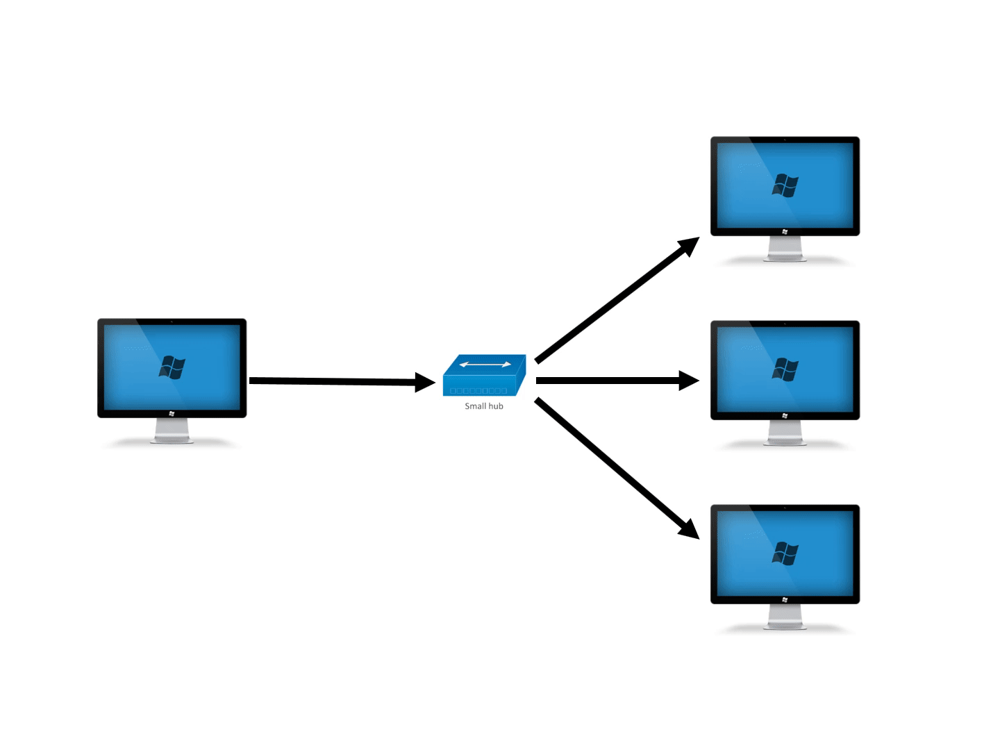
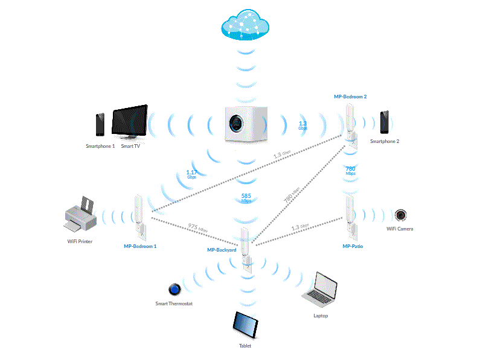

Сетевая безопасность

Сетевая безопасность – это набор действий, направленных на защиту работоспособности и целостности сети и данных. Она обеспечивает защиту от множества угроз и предотвращает их проникновение и распространение в сети.
Как настроить безопасность Wi-Fi роутера
 Wi-Fi роутер является важным компонентом интернет-безопасности. Он проверяет весь входящий и исходящий трафик и контролирует доступ к сети Wi-Fi, а также к телефонам, компьютерам и другим устройствам. Надежность роутеров улучшилась за последнее время, но можно предпринять дополнительные действия для усиления защиты в интернете.
Изменение заданных по умолчанию параметров роутера, таких как имя и учетные данные для входа – это важный первый шаг.
Чтобы повысить безопасность Wi-Fi роутера, можно отключить различные функции и настройки. Такие функции, как удаленный доступ, универсальная настройка сетевых устройств (Universal Plug and Play) и настройка защищенного Wi-Fi, могут использоваться вредоносными программами. Несмотря на то, что эти функции очень удобны, их отключение повысит безопасность домашней сети.
Wi-Fi роутер является важным компонентом интернет-безопасности. Он проверяет весь входящий и исходящий трафик и контролирует доступ к сети Wi-Fi, а также к телефонам, компьютерам и другим устройствам. Надежность роутеров улучшилась за последнее время, но можно предпринять дополнительные действия для усиления защиты в интернете.
Изменение заданных по умолчанию параметров роутера, таких как имя и учетные данные для входа – это важный первый шаг.
Чтобы повысить безопасность Wi-Fi роутера, можно отключить различные функции и настройки. Такие функции, как удаленный доступ, универсальная настройка сетевых устройств (Universal Plug and Play) и настройка защищенного Wi-Fi, могут использоваться вредоносными программами. Несмотря на то, что эти функции очень удобны, их отключение повысит безопасность домашней сети.
Использование VPN в общедоступной сети Wi-Fi
Лучший способ защитить данные в интернете при использовании общедоступного Wi-Fi – это виртуальная частная сеть (VPN). Технология VPN создает зашифрованный туннель между вашим устройством и удаленным VPN-сервером. Весь интернет-трафик передается через этот туннель, что обеспечивает защиту данных. Когда вы подключаетесь к общедоступной сети с помощью VPN, другие пользователи в этой сети не могут отследить ваши действия, что обеспечивает надежную защиту в интернете.
Рекомендации по безопасности беспроводных сетей
🌐 Обеспечьте физическую защиту сетевого устройства. Роутер должен быть установлен так, чтобы исключить действие помех, например, от микроволновки. Также должна быть исключена возможность случайного нажатия кнопки сброса настроек.
🌐 Изменить логин и пароль по умолчанию. Данные для доступа в интерфейс настройки роутера и в сеть Wi-Fi, указываются в инструкции к устройству. Эти данные рекомендуется изменить, создав надежный пароль.
🌐 Запретите трансляцию ID сети. В этом случае получить возможность подключения к вашей беспроводной сети сможет только тот пользователь, который знает ее идентификатор.
🌐 Используйте эффективные протоколы безопасности беспроводных сетей. Так, при настройке роутера рекомендуется устанавливать протоколы защиты WPA/ WPA2.
🌐 Запретите доступ к настройкам роутера через Wi-Fi. В этом режиме для изменения настроек потребуется подключение по кабелю, то есть физический доступ к сетевому устройству, которого нет у посторонних.

🌐 Осторожно используйте Bluetooth. Функция должна быть постоянно отключена на телефоне. Bluetooth рекомендуется включать только непосредственно перед использованием. Отклоняйте запросы на соединение с неизвестными устройствами и не принимайте от них никаких файлов.
🌐 Избегайте использования незащищенных беспроводных сетей в общественных местах. Также не рекомендуется подключаться к чужой незапаролированной сети в пределах вашего дома. Это может быть ложная точка доступа, используемая хакерами для кражи данных.
🌐 Ограничьте радиус действия сети. В идеале лучше ограничить действие Wi-Fi только пределами вашей квартиры или офиса. Это сделает невозможным или значительно затруднит злоумышленнику физических доступ для взлома беспроводной сети.